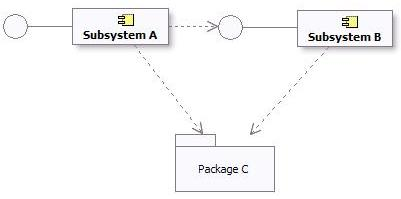
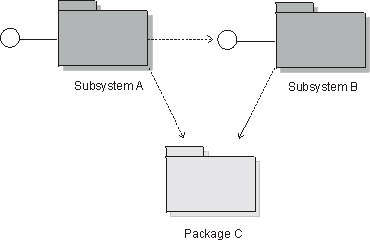

|
Подсистемы могут применяться
различными взаимно дополняющими способами, чтобы разбить систему на структуры, которые
-
можно независимо заказывать, настраивать или доставлять
-
можно независимо разрабатывать, пока интерфейсы остаются без изменений
-
можно независимо развертывать в наборе распределенных вычислительных узлов
-
можно независимо изменять без ущерба для других частей системы
Таким образом, подсистемы идеальны для моделирования компонентов - сменных блоков, предназначенных для сборки во время
разработки на базе компонентов, - которые являются более крупными структурами по сравнению с обычным классом
проектирования.
Кроме того, подсистемы могут
-
разбивать систему на структуры, которые могут обеспечить защиту важнейших ресурсов
-
представлять существующие продукты или внешние системы в проектировании.
Сложный класс анализа отображается в подсистему проектирования, если он осуществляет поведение, за которое не может
отвечать один класс проектирования, действующий в одиночку. Сложный класс проектирования также может стать подсистемой,
если его предполагается реализовать в виде набора совместно работающих классов.
Подсистемы также являются хорошим средством определения частей системы, которые должны разрабатываться независимо
отдельным коллективом. Если элементы проектирования, используемые в совместной работе, могут целиком содержаться в
пакете вместе со своими кооперированиями, то подсистема может предоставить более сильную форму инкапсуляции по
сравнению с той, что предоставляется простым пакетом. Содержимое и кооперирования в подсистеме полностью изолированы за
одним или несколькими интерфейсами, так что клиент подсистемы зависит только от интерфейса. Проектировщик подсистемы,
таким образом, полностью изолирован от внешних зависимостей; проектировщик (или команда проектировщиков) должен указать
способ реализации интерфейса, однако он может как угодно изменять внутренний макет подсистемы, не затрагивая при этом
внешние зависимости. В крупных системах с коллективами, в значительной степени независимыми, такой уровень
самостоятельности, в сочетании с архитектурными требованиями, устанавливаемыми формальными интерфейсами, служит
убедительным доводом, чтобы предпочесть подсистемы простым пакетам.
Подсистема проектирования служит для инкапсуляции этих кооперирований таким образом, что клиентам подсистемы не
требуется ничего знать о внутреннем устройстве подсистемы, даже если они применяют предоставляемые ей службы. Если
участвующие в совместной работе классы или подсистемы взаимодействуют только друг с другом, чтобы создать заданный
набор результатов, то совместную работу вместе с ее элементами проектирования следует инкапсулировать в подсистеме.
Это правило применимо и к подмножествам кооперирований. В любом месте системы можно инкапсулировать и упростить
кооперирование или его часть - это сделает проектирование проще для понимания.
Советы
Совет
|
Сведения
|
|
Стремитесь к оптимальности
|
Если конкретное кооперирование (или субкооперирование) представляет необязательное поведение, заключите
его в подсистему. Функции, которые можно удалять, обновлять или заменять на альтернативные, следует
считать независимыми.
|
|
Учитывайте пользовательский интерфейс системы.
|
Если пользовательский интерфейс сравнительно независим от сущностных классов системы (например, они
могут изменяться и изменяются независимо друг от друга), создайте подсистемы, интегрированные
горизонтально: объедините связанные пограничные классы пользовательского интерфейса в подсистему, а
связанные сущностные классы - в другую подсистему.
|
|
Если пользовательский интерфейс и отображаемые им сущностные классы тесно связаны (например, изменение
в одном вызывает изменение в другом), создайте подсистемы, интегрированные вертикально: заключите
связанные пограничные и сущностные классы в общую подсистему.
|
|
Учитывайте субъекты
|
Разделите функции, используемые двумя различными субъектами, так как каждый субъект может независимо
изменять свои требования в системе.
|
|
Создавайте подсистемы для инкапсуляции доступа к внешней системе или устройству.
|
|
Выясните, нет ли связанных или сцепленных элементов проектирования
|
Тесно связанные или сцепленные классы или подсистемы работают совместно, обеспечивая определенный набор
служб. Разместите тесно связанные элементы в подсистемах и разделите элементы вдоль линий слабой
связанности. В некоторых случаях от слабой связанности можно полностью избавиться, разделив классы на
меньшие классы с более тесно сцепленными обязанностями или по-другому разбив подсистемы на разделы.
|
|
Обеспечьте взаимозаменяемость
|
Если для конкретной функциональной возможности указано несколько уровней обслуживания (например,
высокая, средняя и низкая готовность), представьте каждый уровень обслуживания как отдельную
подсистему; все эти подсистемы должны реализовывать один и тот же набор интерфейсов. В этом случае
подсистемы будут взаимозаменяемы.
|
|
Обеспечьте распределенную обработку
|
Хотя
у конкретной подсистемы может быть несколько экземпляров, каждый на своем узле, во многих архитектурах
распределить один экземпляр по нескольким узлам невозможно. В случаях, когда поведение подсистемы
необходимо распределить по узлам, рекомендуется разложить подсистему на меньшие подсистемы (каждая из
которых будет представлять отдельный компонент) с более узким набором функций.
Определите, какие функции необходимо разместить на каждом узле, и создайте на каждом узле подсистему,
которая будет 'владельцем' этих функций, распределив между этими подсистемами обязанности и связанные
элементы исходной подсистемы.
Новые подсистемы будут внутренними по отношению к исходной подсистеме.
|
Взяв подсистемы за основу проектирования, обновите соответственно реализации варианта использования.
Подсистемы проектирования моделируются с помощью компонентов UML. Эта конструкция предоставляет следующие возможности
по моделированию:
-
можно объединять классы, определяя более крупный компонент системы
-
можно отделять видимые интерфейсы от внутренней реализации
-
можно выполнять во время работы среды
Учтите также следующее:
-
Для каждой подсистемы проектирования необходимо задать имя и краткое описание.
-
Обязанности исходного класса анализа должны быть переданы вновь созданной подсистеме, с документированием этих
обязанностей с помощью описания подсистемы
Примечание: в UML 2.0 также определен стереотип компонента, который называется <<subsystem>>; это означает,
что его можно использовать, например, для представления крупномасштабных структур. Подсистема проектирования RUP может
быть, а может и не быть крупномасштабной структурой; с точки зрения RUP, в обоих случаях она является подсистемой
проектирования. Решить этот вопрос должен архитектор программного обеспечения (например, выбрать, помечать ли
компоненты, состоящие из других компонентов, как относящиеся к стереотипу <<subsystem>>).
Если существующий продукт экспортирует интерфейсы, т.е. операции (а также, возможно, приемы), но в остальном оставляет все подробности реализации скрытыми, то его
можно смоделировать как подсистему в логической панели. Примерами используемых системой продуктов, которые можно
представить с помощью подсистемы, могут служить:
-
Программное обеспечение связи (промежуточное программное обеспечение).
-
Поддержка доступа к базам данных (поддержка отображения RDBMS).
-
Продукты для конкретных приложений.
Некоторые существующие продукты, например наборы типов и структур данных (стеки, списки, очереди), лучше представлять в
виде пакетов, поскольку они предоставляют не только поведение, и важно и полезно именно содержимое пакета, а не сам
пакет, который служит просто контейнером.
Общие утилиты, такие как библиотеки математических функций, можно представлять в виде подсистем, если они просто
экспортируют интерфейсы, однако оправданность такого представления зависит от того, как проектировщик трактует природу
моделируемых объектов. Подсистемы - это объектно-ориентированные конструкции (так как они являются моделируемыми
компонентами): у подсистемы могут быть экземпляры (если это указано проектировщиком). UML предоставляет другой способ
моделировать группы глобальных переменных и процедур в утилите.
Утилита относится к стереотипу класса - у нее не может быть экземпляров.
При определении подсистемы, которая будет представлять продукт, определите также один или несколько интерфейсов для
представления интерфейсов продукта.
Подсистемы проектирования (моделируемые как компоненты UML) отличаются от пакетов по своей семантике: подсистема
предоставляет поведение через один или несколько интерфейсов, которые она реализует. Пакеты не предоставляют поведение;
они просто служат контейнерами объектов, предоставляющих поведение.
Причина, по которой следует применять подсистему, а не пакет, заключается в том, что подсистемы инкапсулируют свое
содержимое, предоставляя поведение только через свои интерфейсы. Преимущество такого подхода в том, что, в отличие от
пакета, содержимое и внутреннее поведение подсистемы можно беспрепятственно изменять, пока ее интерфейсы остаются без
изменений. Подсистемы предоставляют также 'сменный элемент проектирования': любые два компонента
<<realization>>, реализующие одинаковые интерфейсы (или компонент <<specification>>),
взаимозаменяемы.
Для того чтобы обеспечить взаимозаменяемость подсистем в модели, необходимо установить следующие два правила:
-
Подсистема должна минимизировать открытую часть своего содержимого. В идеале, в подсистеме не должно быть ни одного
элемента с 'общедоступной' областью видимости, так чтобы ни один элемент вне подсистемы не зависел от наличия
конкретного элемента внутри подсистемы. Некоторые исключения приведены ниже:
-
В некоторых технологиях внешние объекты подсистемы нельзя моделировать как интерфейс UML. Например,
интерфейс Java моделируется как стереотипный класс.
-
Для проектирования подсистемы может потребоваться открыть классы, а не интерфейсы UML. Например, с помощью
класса "delegate" или "access" можно скрыть сложную совместную работу других классов. Хотя можно
воспользоваться и обычным пакетом, применение подсистемы позволит акцентировать намерение инкапсулировать
поведение и скрыть внутренние подробности.
-
Когда внешние объекты подсистемы не являются интерфейсами UML, часто бывает полезно составить диаграмму (например,
под названием "Вид снаружи"), на которой будут показаны видимые элементы подсистемы.
-
Подсистема должна определять свои зависимости от интерфейсов подсистемы (и общедоступных видимых элементов
подсистемы в вышеописанных исключительных случаях). Кроме того, некоторые подсистемы могут совместно использовать
набор общих интерфейсов или определений классов. В этом случае такие подсистемы 'импортируют' содержимое пакетов с
общими элементами. Такой подход более распространен для пакетов на нижних уровнях архитектуры, чтобы обеспечить
согласованность общих определений классов, передаваемых между подсистемами.
Ниже приведен пример зависимостей подсистемы и пакета:

Зависимости подсистемы и пакета в модели проектирования
Стандарт UML ([UML04]) гласит:
Существует некоторое количество стандартных стереотипов UML, применимых к компоненту. Например, стереотипы
<<specification>> и <<realization>> предназначены для моделирования компонентов с
различными определениями спецификации и реализации, причем у одной спецификации может быть несколько реализаций.
Компонент со стереотипом <<specification>> задает домен объектов, не определяя их физическую
реализацию. Он будет содержать только предоставляемые и обязательные интерфейсы и не предназначен для того, чтобы в
его определении были реализующие классы и подкомпоненты.
Компонент со стереотипом <<realization>> задает домен объектов, а также задает их физическую
реализацию. Например, у компонента со стереотипом <<realization>> будут только те реализующие классы и
подкомпоненты, которые реализуют поведение, заданное отдельным компонентом <<specification>>.
Разделение спецификации и реализации, по существу, позволяет задавать два отдельных описания подсистемы. Спецификация
выступает в роли договора, определяющего все, что клиенту необходимо знать для работы с подсистемой. Реализация - это
подробный внутренний макет, инструктирующий реализатора. Если вы хотите поддерживать несколько реализаций, создайте
отдельные подсистемы "реализации" и проведите линию реализации от каждой подсистемы реализации к подсистеме
спецификации.
Если внутреннее состояние и поведение подсистемы сравнительно просты, то может оказаться достаточно указать подсистему
посредством ее открытых интерфейсов, диаграмм состояния, описывающих поведение, и текста описания.
Если внутреннее состояние и поведение более сложные, то с помощью классов анализа можно указать подсистему на высоком
уровне абстракции. В случае больших систем, состоящих из других систем, спецификация подсистемы может также включать
варианты использования. См. раздел Разработка крупномасштабных систем в Rational Unified Process.
Предоставление подробной спецификации отдельно от реализации особенно полезно в следующих случаях:
-
У реализации подсистемы сложное внутреннее состояние или поведение - и спецификацию необходимо выразить как можно
проще, чтобы клиентам было удобно ей пользоваться;
-
Подсистема является многоразовым "компонентом сборки", используемым в различных системах (см. раздел Концепция: компонент);
-
Внутренние структуры подсистемы будут разрабатываться отдельной организацией;
-
Необходимо создать несколько реализаций подсистемы;
-
Подсистему предполагается заменить на другую версию, имеющую значительные внутренние отличия, без изменения внешне
видимого поведения.
Обслуживание отдельной спецификации, однако, требует усилий, поскольку необходимо убедиться, что реализация подсистемы
совместима со спецификацией. Критерии относительно того, когда и в каких случаях следует создавать отдельные
кооперирования и классы спецификации и реализации, должны быть определены в разделе Рабочий продукт: рекомендации по проекту.
Спецификация должна определять свои зависимости. Это интерфейсы и видимые элементы из других подсистем и пакетов,
которые должны быть доступны во всех совместимых реализациях подсистемы.
У реализации могут быть дополнительные зависимости, введенные проектировщиком или реализатором. Например, возможно, что
для упрощения реализации применяется компонент утилиты, однако это та подробность, которую не следует раскрывать перед
клиентами. Эти дополнительные зависимости следует захватить на отдельной диаграмме как часть процедуры реализации.
Полная спецификация определяет все, что необходимо знать клиенту для работы с подсистемой. Это означает уточнение
открытых интерфейсов и всех общедоступных видимых элементов, так чтобы они в точности соответствовали коду. Классы
анализа, введенные с целью указать поведение подсистемы, должны оставаться на высоком уровне абстракции, поскольку
предполагается, что они независимы от реализаций подсистем.
Элементы реализации подсистемы должны точно соответствовать коду.
Продолжение этой темы см. в разделе Технология: от проектирования к коду.
Моделирование
Подсистемы проектирования можно моделировать как компоненты UML 2.0 или как подсистемы UML 1.5. Эти конструкции
предоставляют практически эквивалентные возможности по моделированию, такие как модульность, инкапсуляция и экземпляры,
выполнимые во время работы среды.
Ниже приведены некоторые дополнительные сведения об этих опциях моделирования:
-
Подсистемы UML 1.5 явно включают понятия "спецификации" и "реализации" (определенные выше в разделе Спецификация и реализация подсистемы). Компоненты UML 2.0
поддерживают понятие спецификации (в форме одного или нескольких предоставляемых и обязательных интерфейсов) и
реализации (внутренняя реализация, состоящая из одного или нескольких классов и подкомпонентов, реализующих ее
поведение).
-
Подсистемы UML 1.5 раньше были пакетами. У компонентов UML 2.0 есть пакетные возможности, что означает, что они
могут содержать и импортировать потенциально большой набор элементов модели.
Однако эти понятия взаимозаменяемы. Решение о том, следует ли представлять подсистемы проектирования как подсистемы UML
1.5 или как компоненты UML 2.0, должно быть отражено в разделе Рекомендации по проекту для вашего проекта.
Если инструмент визуального моделирования поддерживает пакеты UML 1.5, но не подсистемы UML 1.5, то для обозначения
подсистемы можно воспользоваться пакетом со стереотипом <<subsystem>>.
Ограничения на зависимость подсистем
Ограничения на зависимость и обсуждения, приведенные в разделе Ограничения на зависимость подсистем, применимы и к подсистемам
проектирования, моделируемым как подсистемы UML 1.5.
Ниже приведен пример зависимостей подсистемы и пакета в UML 1.5:

Зависимости подсистемы и пакета в модели проектирования
Спецификация и реализация подсистемы
Стандарт UML 1.5 гласит:
Содержимое подсистемы подразделяется на два подмножества: 1) элементы спецификации и 2) элементы реализации.
Элементы спецификации, совместно с операциями и приемами подсистемы, предоставляют абстрактную спецификацию
поведения, предлагаемого элементами реализации. Совокупность элементов реализации моделирует внутреннее устройство
поведенческого блока физической системы.
Разделение спецификации и реализации, по существу, позволяет задавать два отдельных описания подсистемы. Спецификация
выступает в роли договора, определяющего все, что клиенту необходимо знать для работы с подсистемой. Реализация - это
подробный внутренний макет, инструктирующий реализатора.
Одна из возможностей при моделировании спецификаций и реализаций, при отсутствии прямой поддержки со стороны среды
моделирования, заключается в том, чтобы поместить два пакета, спецификацию и реализацию, внутрь каждой подсистемы.
Одна из причин применения спецификаций - поддержка множественных реализаций. В UML 1.x непосредственная поддержка этой
функциональной возможности отсутствовала. Если вы хотите поддерживать несколько реализаций с помощью подсистем UML 1.5,
создайте отдельные подсистемы "реализации" и проведите линию реализации от каждой подсистемы реализации к подсистеме
спецификации.
В целом, вся информация о спецификации и реализации, приведенная для UML 2.0, применима и здесь (объяснение см. в
разделах Когда и как использовать, Зависимости и
Отношение к реализации).
Дополнительная информация
Дополнительная информация приведена в разделе Различия между UML 1.x и UML 2.0.
|